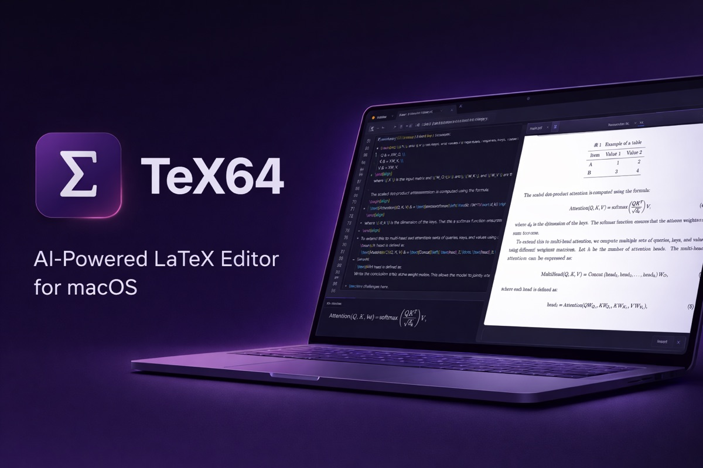
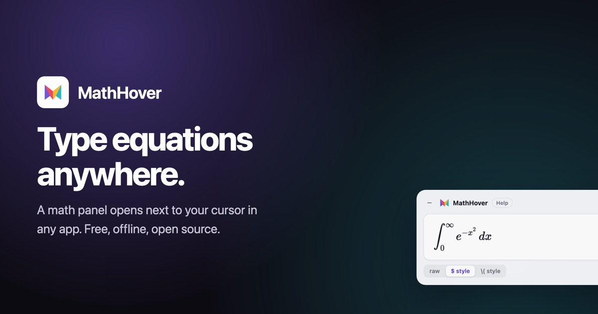
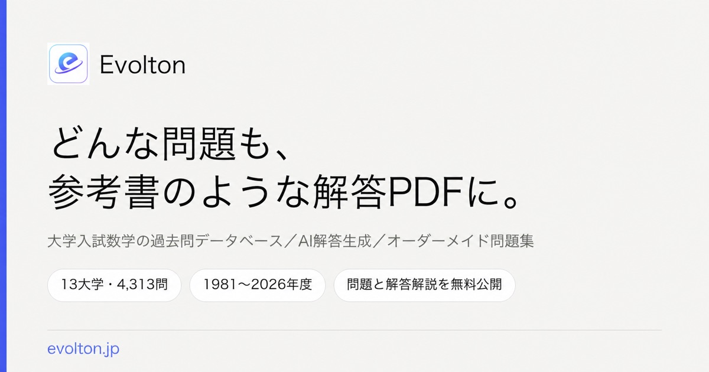

TeXで組版の道具をつくっています。CTAN公式パッケージ7本の著作者、株式会社Fermion共同創業者、東京大学理科一類1年。
I build typesetting tools in TeX. Author of seven packages on CTAN, co-founder of Fermion Inc., first-year student at the University of Tokyo.
高校一年の冬、同期の影響でLaTeXを触りはじめた。最初にやっていたのは鉄緑会の教材をなんとかして再現することで、黎明期のChatGPTと問答しながら、今見るとひどいと言わざるを得ないコードを書いて無理やり動かしていた。
2025年、東京大学理科三類を受験して失敗し、一年の暇ができた。TeXを本格的に扱いはじめたのはここからである。まずTeXの書籍を執筆しようとして翔泳社に持ち込んだが、企画は流れた。その間に書き続けていたOSSパッケージだけが手元に残った。
特殊記号を扱うKKsymbols、解答欄やマークシートを簡単につくるKKran、漢文組版のgckanbunのリワークなど、合計7本の公式パッケージの著作者になった。2026年に東京大学理科一類へ入学し、同大学三年生であった幸川卓実氏と株式会社Fermionを立ち上げた。
I started with LaTeX in the winter of my first high-school year, pushed along by a classmate. What I actually did was try to reproduce my cram-school textbooks, arguing with an early version of ChatGPT and forcing code I would now call unreadable to compile.
In 2025 I failed the entrance exam for the University of Tokyo's Faculty of Science III, which left me a spare year. That is where TeX became serious. I first tried to write a book and pitched it to Shoeisha; the plan fell through, and what remained were the packages I had been writing all along.
Seven of them are now official CTAN packages. In 2026 I entered the University of Tokyo and founded Fermion Inc. with Takumi Yukikawa, then a third-year student there.
2026年、幸川卓実氏と設立。TeXと数式まわりのプロダクトを開発している。
Founded in 2026 with Takumi Yukikawa, building products around TeX and mathematical notation.



Qiitaの記事とXでの投稿が日本のTeX界の方々の目に留まり、登壇の依頼をいただいた。
An invitation that came from my Qiita articles and posts on X being noticed by the Japanese TeX community.